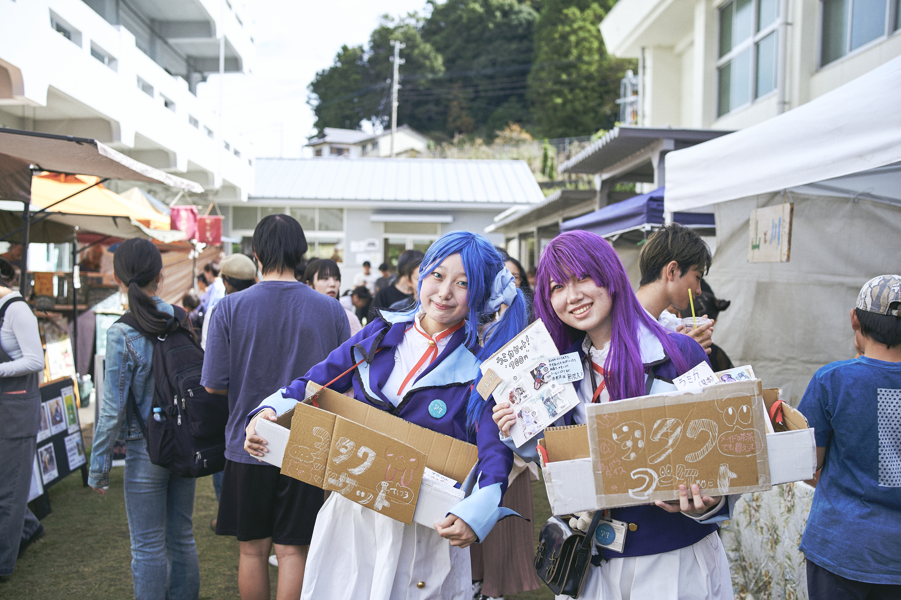
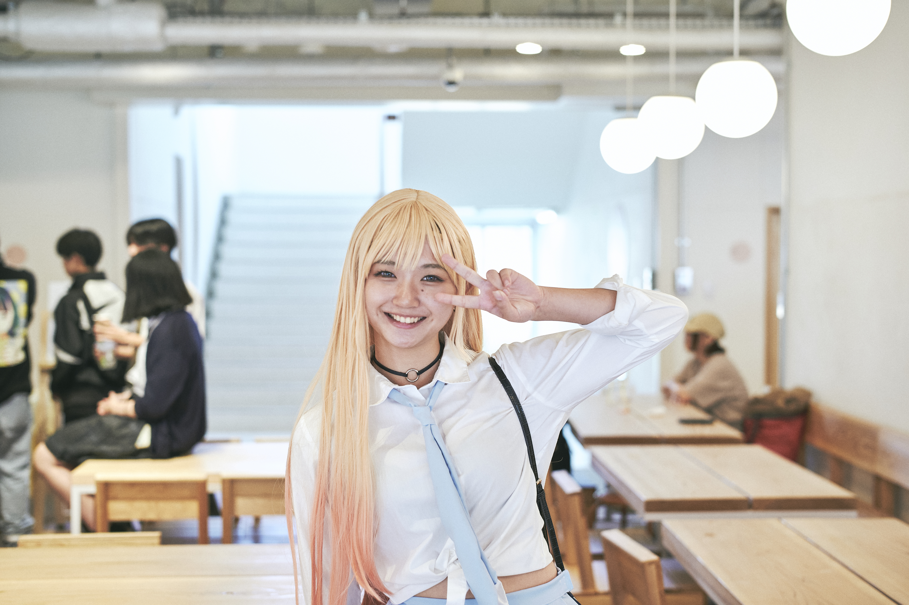
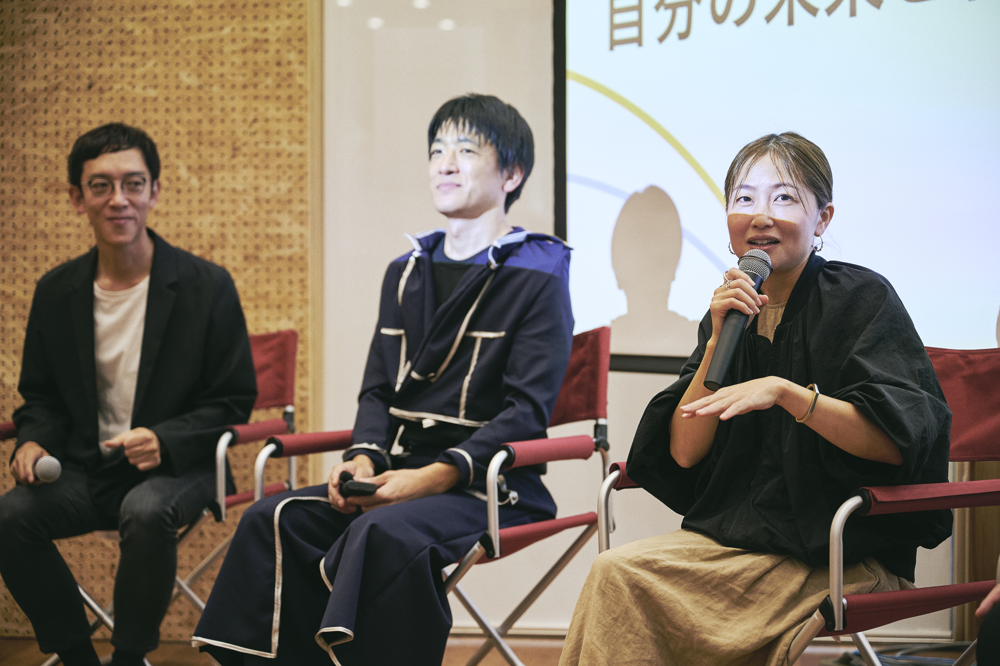

05 / Costume Production
まるごと祭2024
ヲタクマーケット
まるごと祭に向けて、1ヶ月間でコスプレ衣装を9着制作しました。誰がどんな衣装を着るのか決まっていない状態から始まり、人をスカウトし、衣装を考え、形にしていった制作記録です。

その人に似合う衣装を想像するところから
どんな人が衣装を着るのか、どんな衣装を作るのか決まっていない状態からのスタートでした。この人にはどんな衣装が似合うだろうと想像しながら、校内のいろいろな人をスカウトしに行きました。結果、当時の校長にまで衣装を着ていただくことができ、とても幸せな気持ちでした。

衣装を作るために、手を動かしながら学ぶ
製作前は洋裁や服を作る経験こそありましたが、「衣装」という、その人にぴったり合うものを完成させる制作は初めてでした。本や動画を見ながらひたすら手を動かし、最初は言葉の意味すら分からず調べながら進めました。少しずつ技術を学び、簡単な型紙の補正方法や、きれいに仕上げる縫い方の基本を習得することができました。

イレギュラーの連続を越えて
ただ、技術を習得したからといって、それをすぐに活かせるのかは別物なのだとも悟りました。実際に服を作ることはイレギュラーの連続で、布が足りなくなったり、パーツがなくなったり、違うパーツを買ってきていたり、計測方法を間違えていたりしました。布を買い、裁断し、ミシンで縫うという単純に見える作業が、これほど地の果てまで続いているように感じたのはこの時が初めてでした。ですが、実地で身につく経験には、練習とは変えられない価値があると感じられました。
また、着てくれる人を想像しながら作ることで、機能性も考えて服を作る力がついたように思います。いちいちボタンをかけるのは大変だろうからマジックテープで着脱できるようにしたり、肌に触れる部分に縫い目がなるべくこないようにしたり。お客様には見えない細部へのこだわりが、動きやすさや快適さに直結し、それが売上やモチベーションに影響するのだと分かりました。もし次回があるとすれば、もう少し準備期間を伸ばすか、衣装の数を減らしたいです。